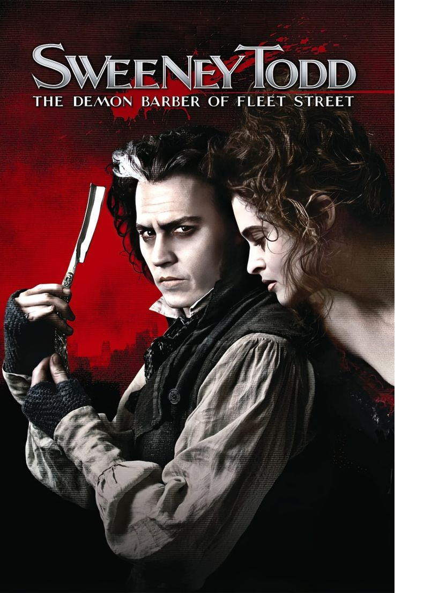

Un oscuro musical de misterio y tragedia ambientado en el Londres victoriano, conocido por su música, sus personajes y su atmósfera gótica.

Sweeney Todd, cuyo título completo es Sweeney Todd: The Demon Barber of Fleet Street, es un musical con música y letras de Stephen Sondheim y libreto de Hugh Wheeler.
La historia sigue a Benjamin Barker, un barbero que regresa a Londres después de haber sido separado de su esposa y su hija. Al volver adopta el nombre de Sweeney Todd y busca vengarse de quienes destruyeron su vida.
Todd regresa a Fleet Street y vuelve a abrir su barbería. Allí conoce a Mrs. Lovett, una mujer que administra una tienda de pasteles de carne situada debajo de la barbería.
Mientras Todd intenta conseguir justicia por lo ocurrido con su familia, su obsesión por la venganza comienza a afectar a todas las personas que lo rodean.
La obra combina elementos de tragedia, humor negro, misterio y drama musical, creando una de las atmósferas más reconocibles del teatro musical.
🎭 Encuentra videos de Sweeney Todd en TikTok
Ver videos de Sweeney Todd en TikTok| Año | Evento | Impacto |
|---|---|---|
| 1979 | Estreno del musical | Sweeney Todd llega a Broadway. |
| 1980 | Premios Tony | La producción recibe importantes reconocimientos. |
| 2007 | Adaptación cinematográfica | La historia llega al cine. |
| 2023 | Regreso a Broadway | Nueva producción del musical. |
Presiona Iniciar juego y atrapa los objetos que aparecen dentro de la barbería. Evita que caigan.
Puntos: 0 Vidas: 3
Presiona "Iniciar juego" para comenzar.
| Número | Canción | Personaje(s) |
|---|---|---|
| 1 | The Ballad of Sweeney Todd | Elenco |
| 2 | Green Finch and Linnet Bird | Johanna |
| 3 | A Little Priest | Todd y Mrs. Lovett |
| 4 | Not While I'm Around | Tobias y Mrs. Lovett |
| 5 | Johanna | Anthony |
Ctrl + R para reiniciar la página y el juego.
Sweeney Todd — una historia donde la venganza transforma por completo la vida de sus personajes.
The Ballad of Sweeney Todd — una de las canciones que presenta la historia.
"Attend the tale of Sweeney Todd."